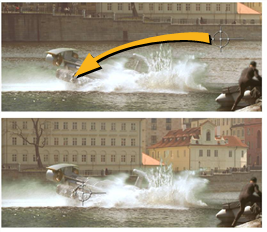

到 翻译 一个元素是在 x 或 y 上滑动它。

可以使用 Transform 、 TransformMasked 或 Position 节点来平移元素。
Transform 和 TransformMasked 节点不仅可以平移元素，还可以从单个属性面板对元素进行旋转、缩放和倾斜。
TransformMasked 与 Transform 相同，只是它提供了分配遮罩的控件，以保护帧的某些区域免受翻译。为了简洁起见，本章只讨论转换的使用，但请记住，您可以在任何需要通过蒙版处理转换时使用 TransformMasked。遮罩控件的工作方式与中描述的相同 掩蔽颜色校正 .
要使用变换节点平移元素:
| 1。 | 单击 变换 > 变换 在脚本中的适当位置插入变换节点。 |
| 2. | 将查看器连接到转换节点的输出，以便您可以看到更改的效果。 |
| 3. | 在 “变换属性” 面板中，增加或减少 翻译 x 和 y 沿任一轴滑动元素的字段。 |
或拖动变换覆盖的中心。
“位置” 节点只提供用于转换元素的裸机参数。
要使用位置节点平移元素:
| 1。 | 单击 变换 > 位置 在脚本中的适当位置插入位置节点。 |
| 2. | 将查看器连接到位置节点的输出，以便您可以看到更改的效果。 |
| 3. | 在 “位置属性” 面板中，增加或减少 翻译 x 和 y 沿任一轴滑动元素的字段。 |
|
|